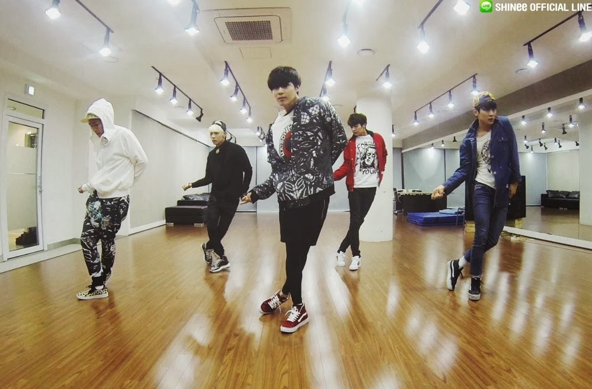
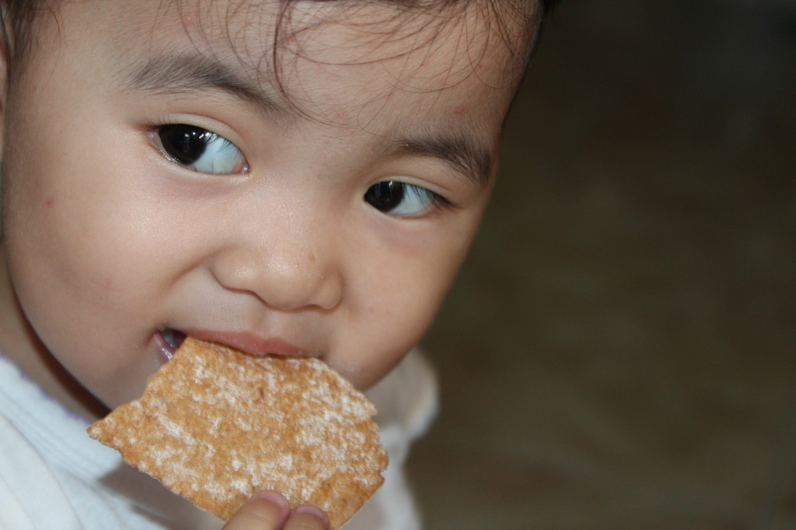

Second nature

DANCE
Dancing is one of my best habit, it is also my talent especially in the genre of hip hop. I learned dancing when I was in 5th grade because on that day the school had an activity called NDEA then I try to join, After until then dancing became my habit, I love to move with my whole body and feel the rythm of the music.
MUSIC
Listening to music is my habit, anytime and anywhere I love to, I also love listening to music because I feel its beats through my heart thats my I dance sometimes when I heard wonderful songs.

EAT
Eating is also my best habit because eating makes me feel relief from stress on the otherhand spending money for foods is just a little problem for me, just spend your money for the exchange of enjoying your delicious food.